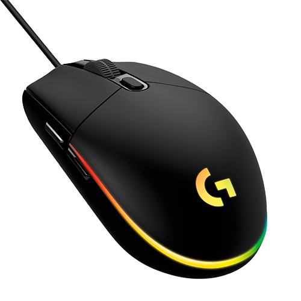

logitech G102
Logitech G102 - это игровая мышь, разработанная для геймеров, обеспечивающая высокую точность и комфорт. Она оснащена оптическим сенсором с разрешением до 8000 DPI, что позволяет адаптировать чувствительность под разные стили игры. Симметричный и легкий дизайн делает её удобной как для правшей, так и для левшей, что особенно важно при длительных игровых сессиях.
У G102 шесть настраиваемых кнопок, что позволяет создавать макросы и быстро выполнять команды, что может стать решающим фактором в соревновательных играх. Также мышь оснащена RGB-подсветкой, позволяющей пользователям настраивать внешний вид под свои предпочтения.
Проводное соединение обеспечивает стабильную связь и низкую задержку, что критично для онлайн игр. Logitech G102 совместима с программным обеспечением Logitech G HUB, что позволяет легко настраивать параметры. В итоге, G102 - это отличный выбор для тех, кто ищет баланс между производительностью и комфортом в игровом процессе.
Инструкция к мыши
